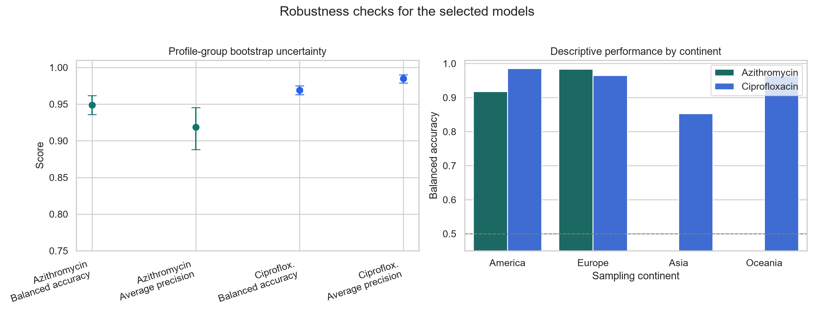

Genomic prediction · Python
Antimicrobial resistance in N. gonorrhoeae
Bioinformatics Computing II · 2025 coursework; revised analysis, 2026
Can binary genomic unitigs distinguish resistant from susceptible isolates without letting duplicate profiles cross the training–test boundary?
Methods
The revised notebook audits 3,786 metadata records and compares class-weighted logistic regression and random forest against a prevalence baseline. It uses five-fold cross-validation grouped by identical unitig profiles, with variance filtering and chi-square feature selection inside each training fold.
Recorded internal results
| Antibiotic | Labelled isolates | Balanced accuracy |
|---|---|---|
| Azithromycin | 3,478 | 0.949 |
| Ciprofloxacin | 3,088 | 0.969 |
These are internal estimates from already GWAS-filtered inputs; upstream selection leakage cannot be excluded. They are not external or clinical validation. Cefixime is descriptive only because it has five resistant isolates. No resistance-gene mapping is claimed.

